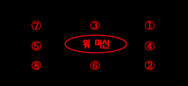

|
|
WAR MACHINE VS PARTY
※ 이 곳의 방법이 공략법의 전부는 아닙니다. 참고는 하되 자신만의 방법을 개발 해 보길 바랍니다.
파티 플레이 최단 시간 클리어 기록 : 엘프 + 매직 유저 4:55
참고 사항
▶ 2인 이상 플레이시 워 머신과 최초로 몸체가 겹친 플레이어가 목표물이 된다. 이후 전투가 시작되고 나서 목표물이 된 플레이어가 다시 겹칠 경우 워 머신은 사방팔방으로 오일을 뿌려댄다. 워 머신 몸체 중앙 부분은 오일이 날아오지 않지만 뒤에서 미는 고블린 들을 처리하기엔 조금 애매한 위치다.
따라서 목표물이 된 플레이어는 먼거리에서 오일을 뿌리거나 해서 지원 사격정도만 하는게 좋다. 불 내성의 반지가 있다면 모르겠지만 이것때문에 타입 E를 선택하기엔 아쉽다. ▶ 만약 파티원 전부가 인비지빌리티를 시전받고 워 머신과 조우하게 되면 이런 오일 공격을 하지 않으니 엘프가 있다면 전부 인비지빌리티를 걸어두는 것도 좋다.  오일을 뿌리는 방향과 순서. 플레이어가 겹쳐있는 한 무한으로 뿌린다. 기본 공략법
데미지가 빈약한 클래스의 플레이어가 오일의 타겟이 되어주고 데미지가 강력한 플레이어가 워 머신을 공격하는게 기본 방식이라 할 수 있겠다. 매직 유저라면 타겟이 되어서 먼거리서 오일을 한두개씩 던져 주면 되고 시프나 엘프라면 슬링/화살로 지원 사격을 하는 것도 좋다. 클레릭이라면 목표물이 될 플레이어를 제외하고 블레스와 스트라이킹을 걸어주고 스틱 투 스네이크도 깔아주자.
실수로 목표물이 될 플레이어가 워 머신을 놓쳐서 목표물이 바뀔 수도 있을 것 이다. 그럴때는 투덜대지 말고 얼른 자리를 바꿔서 공격하자. * 영상 정보 - 플레이어 1p crassus 2p 망고 / 클리어 시간 4:37 * 영상에서는 2p가 목표물이 되어 있다. * 영상 정보 - 플레이어 crassus / 클리어 시간 4:35 * 아이템을 쓰지않고 빨리 깨야할때 괜찮은 방법이다. 다만 슬래쉬입력을 실수하면 동전을 줍게 되어 워머신을 놓치게 되어버리는 사태가 날수 있다. * 영상 정보 - 플레이어 1p crassus 2p 멋★ 3p Guns / 클리어 시간 4:21 * 3~4인의 경우도 크게 다를 것이 없다. 다만 좀 더 오래 공격을 해야 할 것이다. 엘프의 라이트닝 볼트를 이용한 공략법
엘프가 파티에 있을 경우 가능한 공략법이다.
'워머신 vs 엘프'를 봤다면 라이트닝 볼트의 위력이 엄청나다는 것을 봤을 것이다. 그 위력은 팀플레이에서도 발휘된다. 방법자체는 같으니 오일 타겟의 분업만 잘 하면 무난하게 클리어 할 수 있다. * 영상 정보 - 플레이어 1p 망고 2p crassus / 클리어 시간 4:49 * 클레릭 + 엘프의 조합시 가장 빠르게 끝낼 수 있는 방법이기도 하다. 매직 유저가 파티에 있다면 숨겨진 방의 상자를 매직 유저가 열어서 라이트닝 로드를 꺼내거나 아니면 매직 유저의 타입을 J로 하고 엘프가 상자를 연 뒤 나오는 불 내성의 반지를 매직 유저가 줏어서 라이트닝 로드를 바닥에 놓으면 그것을 엘프가 줏으면 초반부터 라이트닝 로드 + 이어링 이라는 조합이 탄생된다. 그 조합으로 라이트닝 볼트를 명중 시킨다면 그야말로 엄청난 데미지를 선사 할 수 있다. * 영상 정보 - 플레이어 crassus / 클리어 시간 4:53 * 2인이라면 그야말로 한방에 끝낼 수 있고 3~4인의 경우 약간 hp가 남는다. 1p 클레릭이 있다면 스틱 투 스네이크를 먼저 한번 써주면 깔끔하게 끝낼 수 있다. * 영상 정보 - 플레이어 crassus / 클리어 시간 4:55 * 위와 방법이 같은데, 왼쪽에서 쏘는게 아니라 오른쪽에서 시작한다. 고블린이 아직 다 나오지 않은 시점에서라도 간격을 잘 맞춰서 시전하면 2초정도 효과를 볼 수 있다. 헤이스트를 이용한 공략법
* 영상 정보 - 플레이어 crassus / 클리어 시간 4:41 * 실용성은 그다지 없지만 이런 것도 가능하다. 시프x2 + 엘프x2의 조합으로 헤이스트 시전 후 화살과 슬링을 열심히 날려준다. 헤이스트로 인해 중첩효과가 잘 일어난다. 투척무기를 이용한 공략법
* 영상 정보 - 플레이어 crassus / 클리어 시간 4:51 * 드워프가 던지는 B오일 사이사이에 해머를 해머를 넣어 데미지를 중첩 시키는 효과이다. 해머 중첩데미지는 운이 따라야하며 해머를 전부 소모해야 되기때문에 실용적인 면에서는 그다지 관장하지 않는다. |